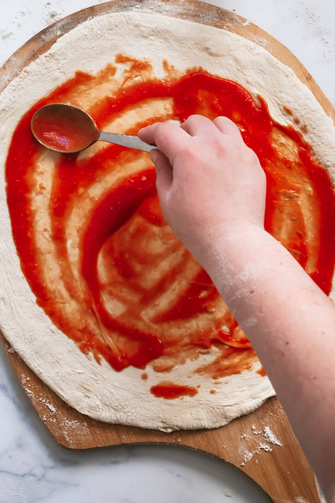

Hot, cheesy pizza loaded with your favorite veggies is one of the most fun and easy dinners to make at home. With just a few key tips you can create a restaurant-quality crust, and treat yourself to the best homemade pizza that’s completely customizable to your tastes. Plan your next pizza party using my foolproof Pizza recipe, with step-by-step photos for making perfect and best veggie pizza from scratch every time!
Ingredients:
For the Dough (or use store-bought dough):
2 ½ cups all-purpose flour
1 teaspoon sugar
1 packet (2 ¼ tsp) active dry yeast
1 teaspoon salt
1 cup warm water (110°F)
2 tablespoons olive oi
For the Sauce:

1 cup tomato sauce (or pizza sauce)
1 teaspoon dried oregano
1 teaspoon dried basil
1 clove garlic (minced)
Salt and pepper to taste
For the Toppings (you can adjust based on your preference):
1 cup shredded mozzarella cheese (or a vegan alternative)
½ cup sliced bell peppers (red, green, yellow)
½ cup sliced red onions
½ cup sliced mushrooms
½ cup spinach leaves
¼ cup black olives (sliced)
1 small zucchini (thinly sliced)
1 small tomato (sliced)
A pinch of red pepper flakes (optional)
Fresh basil leaves (for garnish)
Olive oil for drizzling
Instructions:
1. Prepare the Dough:
In a small bowl, combine warm water, sugar, and yeast. Let it sit for 5 minutes until it becomes foamy.
In a large mixing bowl, combine flour and salt. Add the yeast mixture and olive oil, and mix until the dough forms.
Knead the dough on a floured surface for 5-7 minutes until smooth and elastic.
Place the dough in a lightly oiled bowl, cover with a damp cloth, and let it rise in a warm place for about 1 hour, or until doubled in size.
Once risen, punch down the dough and roll it out into a circle or rectangle (depending on your pan).
2. Preheat the Oven:
Preheat the oven to 475°F (245°C).
3. Prepare the Sauce:
In a small bowl, mix the tomato sauce with oregano, basil, minced garlic, salt, and pepper.
Spread the sauce evenly over the rolled-out dough.
4. Add the Toppings:
Sprinkle the shredded mozzarella cheese evenly over the sauce.
Add your sliced veggies: bell peppers, onions, mushrooms, spinach, olives, zucchini, and tomatoes.
Drizzle a little olive oil over the top, and if you like some heat, sprinkle red pepper flakes.
5. Bake the Pizza:
Bake in the preheated oven for 12-15 minutes, or until the crust is golden and the cheese is bubbly and melted.
If using vegan cheese, check the package instructions, as baking times may vary.
6.Garnish and Serve:
Once baked, remove from the oven and garnish with fresh basil leaves. Let it cool for a couple of minutes before slicing and serving.